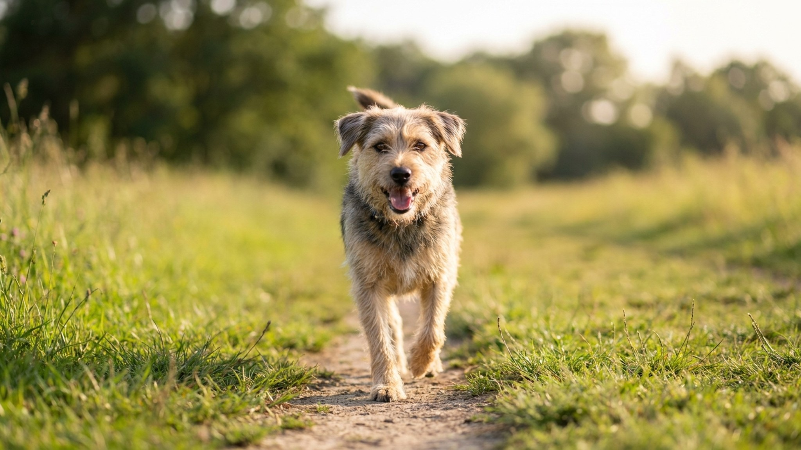

Команда «ко мне» на 100%: пошаговый план идеального отзыва собаки на прогулке

31 мая 2026 · 9 минут чтения · Дрессировка · Отзыв
«Ко мне» — самая важная команда в жизни собаки. Не «сидеть», не «лежать». Именно отзыв может спасти жизнь: от машины, агрессивной собаки, ядовитого объекта на земле. По исследованию Applied Animal Behaviour Science 2024, 62% хозяев оценивают отзыв своей собаки как «ненадёжный» — собака слышит, но игнорирует. Это обучаемо и исправимо. Нужна система, а не повторение команды 50 раз подряд.
Почему собака не возвращается по команде
Отзыв не работает по одной из трёх причин — или по всем сразу:
- Команда слишком «дешёвая». Собака слышала «ко мне» тысячи раз без последствий. Слово обесценено. Иногда с ним даже связан негативный опыт — хозяин позвал, надел поводок и повёл домой. Лучше начать с новым словом-сигналом.
- Конкуренция выигрывает. Запах белки, другая собака, лужа — всё это значительно интереснее хозяина. Отзыв не выработан до уровня, который превышает ценность отвлечения.
- Тренировка шла в слишком лёгких условиях. Дома работает — на улице нет. Среда не нарастала постепенно. Собака не умеет генерализовать навык.
Главный принцип обучения отзыву: «ко мне» должно быть самым выгодным решением в любой ситуации. Собака возвращается не потому что боится наказания, а потому что у хозяина — самое лучшее, что есть в мире прямо сейчас.
Подготовка: лакомство, маркер, новый сигнал
Перед началом тренировок — три обязательных шага:
1. Выбрать сверхценное лакомство. Не сухой корм. Что-то, что собака получает только за отзыв: кусочки варёной курицы, говяжье сердце, тунец, сыр. Чем сильнее мотивация — тем быстрее обучение.
2. Зарядить маркер. Маркер — слово или кликер, которое точно фиксирует момент правильного поведения. Используйте «да!» или кликер. 20-30 повторений: маркер → лакомство. После этого маркер приобретает ценность сам по себе.
3. Выбрать новый сигнал отзыва. Если слово «ко мне» уже обесценено — начните с нового: «сюда», «come», свисток. Сигнал свистка особенно эффективен: слышен далеко, не несёт эмоций, не изменяется при стрессе хозяина. Профессиональные охотничьи собаки и спасатели работают преимущественно на свисток.
Этап 1: дома, расстояние 1-2 метра
Начинаем в самой безопасной среде — дома без отвлечений.
- Собака в 1-2 метрах от вас. Позовите сигналом отзыва один раз — только один. Не повторяйте.
- Как только собака сделала движение к вам — маркер «да!» — лакомство, как только подошла.
- Никогда не зовите, если не уверены, что собака выполнит. Каждый игнорируемый отзыв учит собаку, что команду можно игнорировать.
- Если собака не идёт — уйдите в другую комнату, стимулируйте любопытство. Не повторяйте сигнал.
- 10-15 повторений в день, короткими сессиями по 2-3 минуты.
- Заканчивайте на успехе — всегда.
На этом этапе 95%+ успех — переходите дальше. Не торопите. Хороший фундамент на первом этапе — залог надёжности на улице.
Этап 2: дома с лёгкими отвлечениями, расстояние до 5 метров
- Увеличьте расстояние до 3-5 метров.
- Добавьте лёгкие отвлечения: включённый телевизор, другой человек в комнате.
- Используйте длинный поводок (3-5 метров) — не для рывка, а как страховку. Если собака не идёт, вы просто подходите сами. Никаких рывков.
- Когда собака пришла — праздник. Несколько лакомств подряд, голос радостный, физический контакт если собака любит.
- Не надевайте поводок сразу после каждого отзыва. Иначе отзыв = конец прогулки. Зовите, давайте угощение, отпускайте снова. Так отзыв не ассоциируется с «плохим».
Этап 3: двор или тихое место, длинный поводок 10-20 метров
- Выход на улицу — только на длинный поводок (флексе — нет, флекс не даёт контроля). Верёвка 10-20 метров.
- Дайте собаке понюхать, исследовать. Подождите, пока немного отвлечётся, но ещё не полностью увлечена.
- Один сигнал отзыва. Если не идёт — подходите сами к собаке, без наказания. Переоцените уровень сложности — вернитесь на шаг назад.
- Если пришла — максимальное вознаграждение. На улице нужна «джекпот»-реакция: 5-7 кусочков подряд или игра с любимой игрушкой.
- Тренируйте 10-15 отзывов за прогулку, не подряд, между нормальными активностями.
Этап 4: парк с другими собаками и людьми
Это самый сложный уровень. Переходите только когда на предыдущем этапе — 90%+ успех.
- Длинный поводок остаётся, пока не будет стабильного отзыва на людях и собаках.
- Зовите когда собака видит, но ещё не в прямом контакте с другой собакой — это легче, чем от полного контакта.
- Лакомство должно быть ещё ценнее, чем на предыдущих этапах. Другие собаки — мощнейший конкурент. Нужен «суперджекпот».
- Не зовите «ко мне» в момент, когда собаки уже играют. Это почти невыполнимо даже для тренированных собак. Сначала научите прерывать игру отдельной командой.
- Используйте «внезапный отзыв»: повернитесь и быстро убегайте от собаки с весёлым криком. Инстинкт преследования часто сильнее любой команды — используйте его.
Типичные ошибки хозяев, которые ломают отзыв
- Повторять команду несколько раз. «Ко мне, ко мне, КО МНЕ!» — учит собаку, что первый сигнал необязателен.
- Наказывать за медленный приход. Собака пришла через 30 секунд — нельзя ругать. Она пришла — это успех. Наказание за «медленно» — это наказание за возвращение.
- Звать и сразу уходить домой. Собака учится: «ко мне» = конец прогулки. Разрывайте эту связь.
- Использовать «ко мне» для неприятных вещей. Таблетка, стрижка когтей, осмотр — не подзывайте командой. Идите сами.
- Тренировать только дома. Навык не переносится автоматически. Нужна работа на каждом новом уровне сложности.
- Убирать поводок слишком рано. Без стабильного отзыва в условиях реальных отвлечений — поводок остаётся. Это безопасность, не недоверие.
Свисток как инструмент: почему профессионалы его выбирают
Свисток Acme 210,5 или аналог — стандарт в работе с охотничьими и пастушьими породами. У него есть принципиальные преимущества перед голосом:
- Один и тот же звук всегда. Голос человека меняется при стрессе, раздражении, спешке. Собака считывает эмоцию, а не команду. Свисток — нейтральный, стабильный сигнал.
- Слышен на большом расстоянии. Голос теряется на ветру или в шуме парка. Свисток пробивает фоновый шум.
- Нет «обесценивания». Свисток — редкий сигнал, не связанный с бытовым общением. Каждый сигнал воспринимается как особый.
Протокол зарядки свистка: 3-4 длинных сигнала → мгновенно лакомство. 20-30 повторений. Собака начнёт реагировать на звук ещё до того, как вы достанете угощение — хороший знак. Затем перейдите к полноценным тренировкам отзыва на свисток по тому же плану, что на голосовой сигнал.
Как поддерживать отзыв: тренировки на всю жизнь
Отзыв — не «выучил и забыл». Это навык с эффектом угасания: если не практиковать, надёжность снижается. Особенно это критично для молодых собак в период «подросткового» непослушания — 6-18 месяцев.
Минимальная программа поддержки:
- 5-10 отзывов на каждой прогулке. Не подряд — вразброс, между другими активностями.
- Раз в неделю — «джекпот» сессия: неожиданный отзыв в сложных условиях + максимальное вознаграждение.
- Периодически обновляйте ценность лакомства. Если одно лакомство приелось — смените на другое.
- Не забывайте хвалить. Даже после 3 лет тренировок каждый отзыв заслуживает маркера и угощения — хотя бы части из них.
С возрастом собаки (7+ лет) отзыв обычно становится надёжнее — снижается импульсивность. Но в старости добавляется снижение слуха. Вводите визуальный сигнал параллельно со звуковым заранее — мах рукой, призывное движение корпусом.
Юридический аспект: отзыв и закон в России 2026
В России с 2024 года действует закон, требующий выгуливать собак потенциально опасных пород (список из 13 пород, включая американского стаффордширского терьера, ротвейлера, акиту) на поводке и в наморднике в общественных местах. Для остальных пород поводок обязателен в населённых пунктах, на детских площадках, в транспорте.
Надёжный отзыв — это не альтернатива поводку в запрещённых местах. Это инструмент безопасности в разрешённых зонах выгула без поводка: специальные площадки для собак, леса, поля. И инструмент спасения в экстренной ситуации, когда поводок лопнул или отстегнулся.
Владелец несёт ответственность за действия собаки. Отзыв — один из способов эту ответственность выполнять.
Специальные ситуации: охота, травля, реактивность
Для собак с высоким охотничьим инстинктом (хаски, бигли, терьеры, грейхаунды) порог усилий выше. Отзыв от дичи или кошки — отдельный навык, который строится годами и требует профессионального кинолога. Для таких пород — длинный поводок на прогулке не «временная мера», а постоянный рабочий инструмент безопасности.
Реактивная собака (бросается на других собак или людей) — тоже отдельный кейс. Отзыв от реактивного триггера требует работы с квалифицированным специалистом по поведению, потому что здесь часто задействован страх, а не непослушание.
Итог: три правила надёжного отзыва
- Один сигнал — один шанс. Позвали один раз. Не работает — меняйте стратегию, не повторяйте слово.
- Возвращение к хозяину = лучшее в мире. Каждый успешный отзыв — праздник. Без исключений.
- Не зовите, если не уверены. Лучше подойти самому, чем дать собаке опыт «игнорирования» команды.
Надёжный отзыв строится от 2 недель до нескольких месяцев — в зависимости от собаки, возраста и предыдущего опыта. Это не «один раз выучил и готово». Это навык, который нужно поддерживать тренировками на протяжении всей жизни собаки. Щенки в возрасте 8-16 недель находятся в сенситивном периоде — обучение в это время закладывает фундамент на всю жизнь. Начинать отзыв с первого дня появления щенка в доме — оптимальное решение. Пять минут в день на прогулке — достаточно, чтобы отзыв работал всегда.
← Все статьи · Открыть AnimaLife в Telegram · RSS